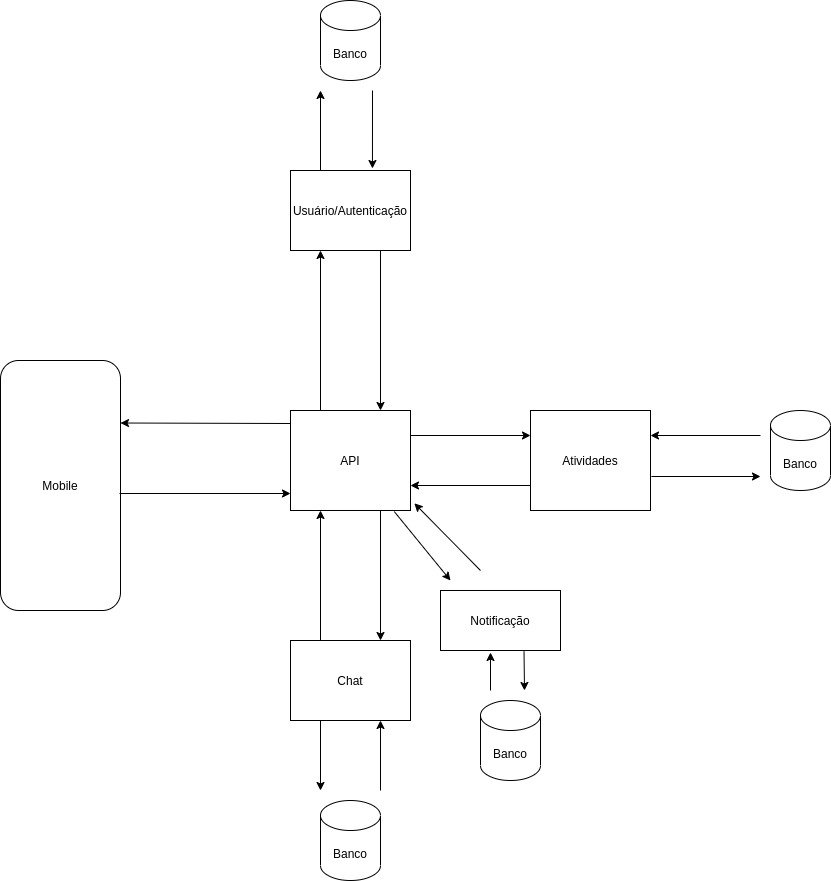
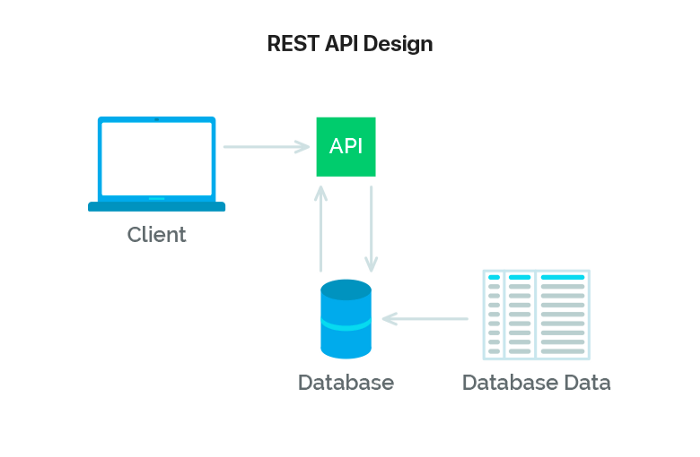
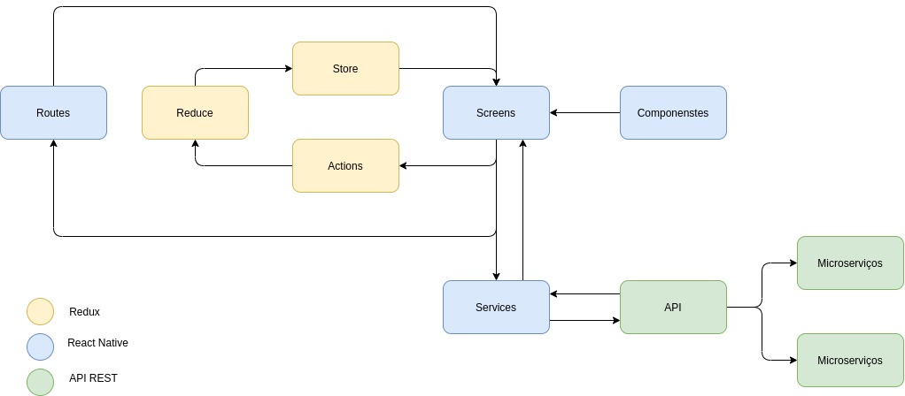

Arquitetura POMO
Histórico de revisões
| Data | Versão | Descrição | Autor |
|---|---|---|---|
| 20/09/2020 | 1.0 | Criação da página e adição de conteúdo | Todos do grupo |
| 24/09/2020 | 1.1 | adição de conteúdo | Andé Eduardo |
Sumário
-
1.1Finalidade
-
1.2Escopo
- 2.2Componentes
- 2.3Padrão de Arquitetura API REST
1. Introdução
1.1 Finalidade
Este documento de arquitetura tem a função de especificar decisões arquiteturais relevantes no desenvolvimento do App Pomo, Utilizando tecnologias como React Native e Node, descrevendo seus aspectos e funcionalidades dentro sistema de forma clara e objetiva.
1.2 Escopo
Neste documento serão retratados os modelos arquiteturais implementados, descrição e utilização de frameworks que compõe a aplicação Pomo.
2. Representação da arquitetura
2.1 Diagrama de relações

O diagrama acima apresenta cada etapa que será seguida para que o Aplicativo Pomo funcione. Relacionando o front-end, Back-end,e as APIs externas.
2.2 Componentes
Mobile
Componente que representa o front no diagrama que fará as principais requisiçṍes para a API.
API
Componente "cérebro" que irá processar os dados advindos dos serviços e, assim, formatar e padronizar essas informações para comunicação com o frontend.
Atividades
Componente que irá gerenciar as atividades (CRUD).
Usuário/ Autenticação
Componente que irá gerenciar os usuários (CRUD).
Chat
Componente que irá gerenciar as conversas.
Notificação
Componente que irá gerenciar as notificações.
2.3 Padrão de Arquitetura API REST
Trata-se de um conjunto de requisições que permite a comunicação de dados entre aplicações. Para isso, a API REST utiliza requisições HTTP responsáveis pelas operações básicas necessárias para a manipulação dos dados. As principais requisições são:
POST: criar dados no servidor;
GET: leitura de dados no host;
DELETE: excluir as informações;
PUT: atualizações de registros.

2.4 Diagrama React/Redux/Api

React native
É dividido em pastas, Screens, Routes, Services e Components. A pasta de Screens armazena todas as telas do aplicativo que são formadas utilizando componentes criados na pasta Components, A navegação de telas é feita dentro da Routes. E os Services e responsavel pela comunicação externa da aplicação.
REDUX
O Redux armazena as informações obtidas no uso do aplicativo em uma store, para facilitar o acesso dessas informações em outras telas. O redux pode ser dividido ainda em arquivos de Actions e Reducers. Um Reducer é um objeto que é salvo na store durante o uso do aplicativo de forma que possa ser chamado e modificado em toda a aplicação. As Actions são responsáveis por requisitar algo para um reducer.
API Rest
A API Rest, produzida em Node.js, controla e fornece as informações que serão exibidas no aplicativo. Para qualquer acesso aos dados feito pelo aplicativo é necessário que ela seja chamada. A API é dividida em alguns microserviços, a fim de se obter um maior desacoplamento entre suas funcionalidades.
3. Referências
Alifyz, Pires. Consumindo API REST. medium, 2018. Disponível em: https://medium.com/@alifyzfpires/consumindo-api-rest-com-retrofit-kotlin-no-android-abba52820cc. Acesso em: 24, setembro de 2021.
Souza, Ivan. Entenda o que é Rest API . Stage, 2020. Disponível em: https://rockcontent.com/br/blog/rest-api/. Acesso em: 24, setembro de 2021.
Flux:Entendendo a arquitetura com React, GeekHunter, 2019. Disponível em: https://blog.geekhunter.com.br/flux/. Acesso em: 24, setembro de 2021.
Kröger, Helio. Entendendo React e Redux. medium, 2017. Disponível em: https://medium.com/@hliojnior_34681/entenda-react-e-redux-de-uma-vez-por-todas-c761bc3194ca. Acesso em: 24, setembro de 2021.